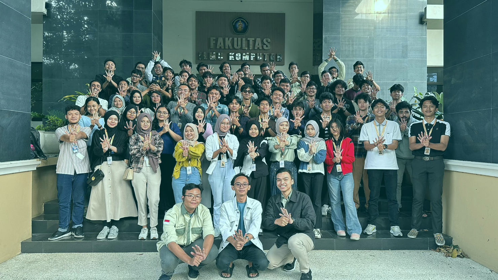

Tentang Kami
Himpunan Mahasiswa Depantemen Teknik Informatika

Himpunan Mahasiswa Departemen Teknik Informatika merupakan lembaga yang mewadahi mahasiswa departemen teknik informatika, untuk meningkatkan prestasi meningkatkan optimalisasi peran advokasi, sebagai tempat eksplorasi minat bakat, meningkatkan soft skill, menumbuhkan rasa kekeluargaan, kebersamaan dan toleransi, serta menjadi wadah kerja kolaboratif Departemen Teknik Informatika.